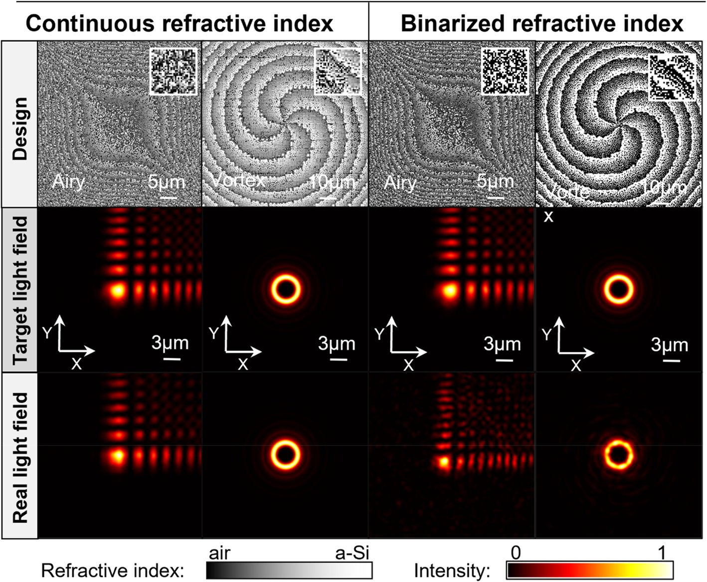
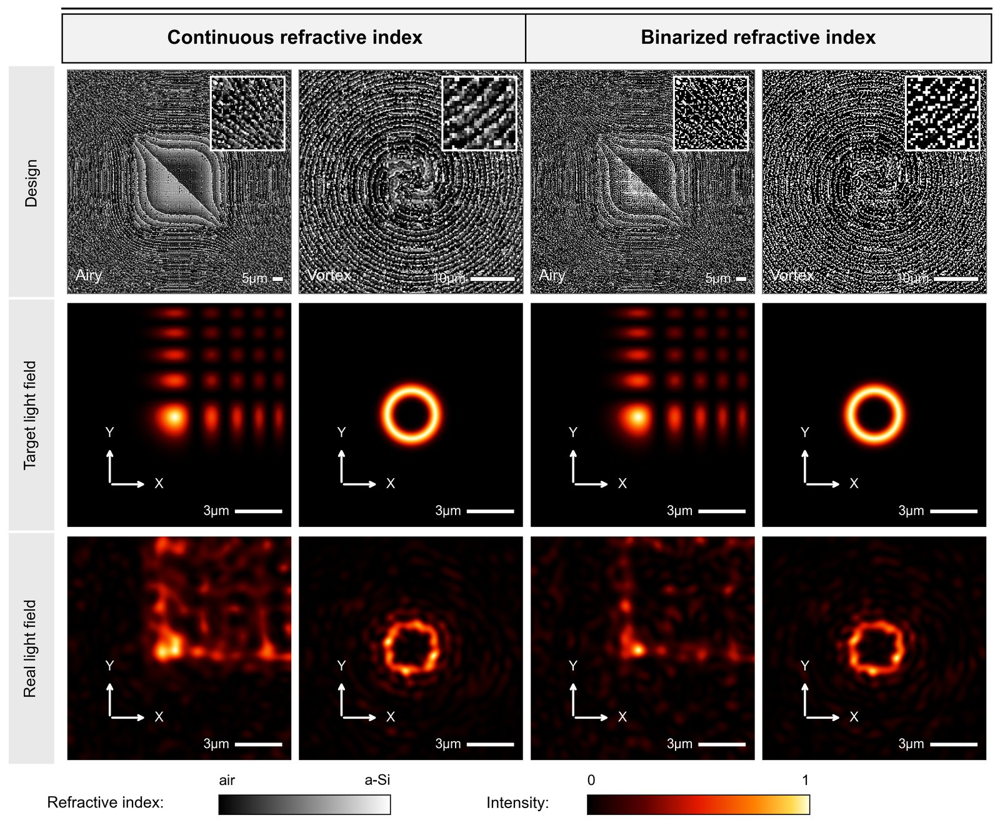
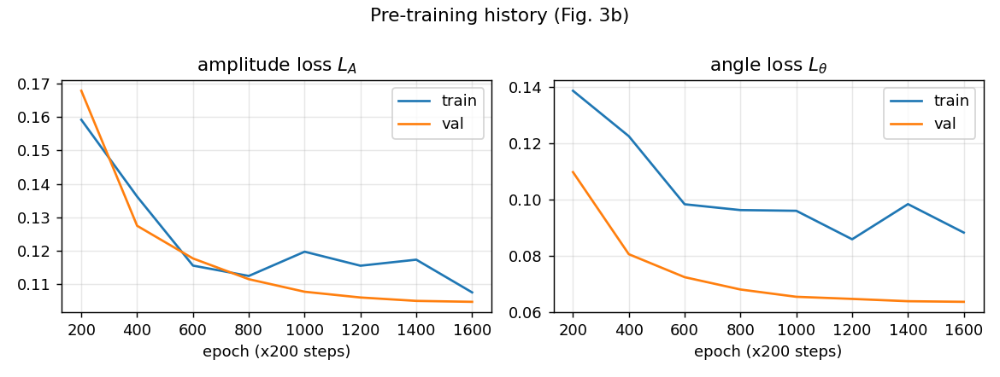
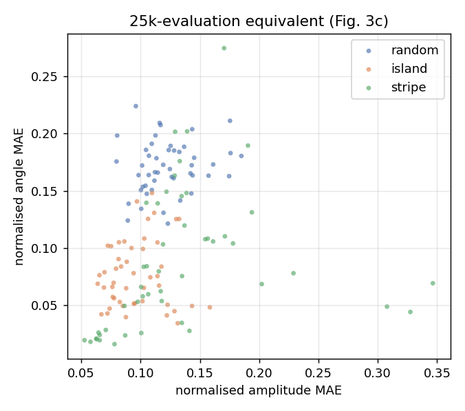
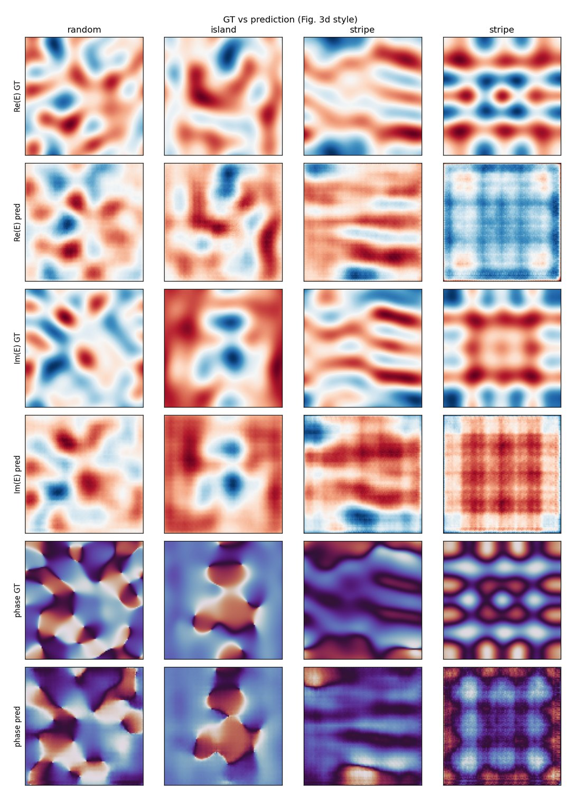
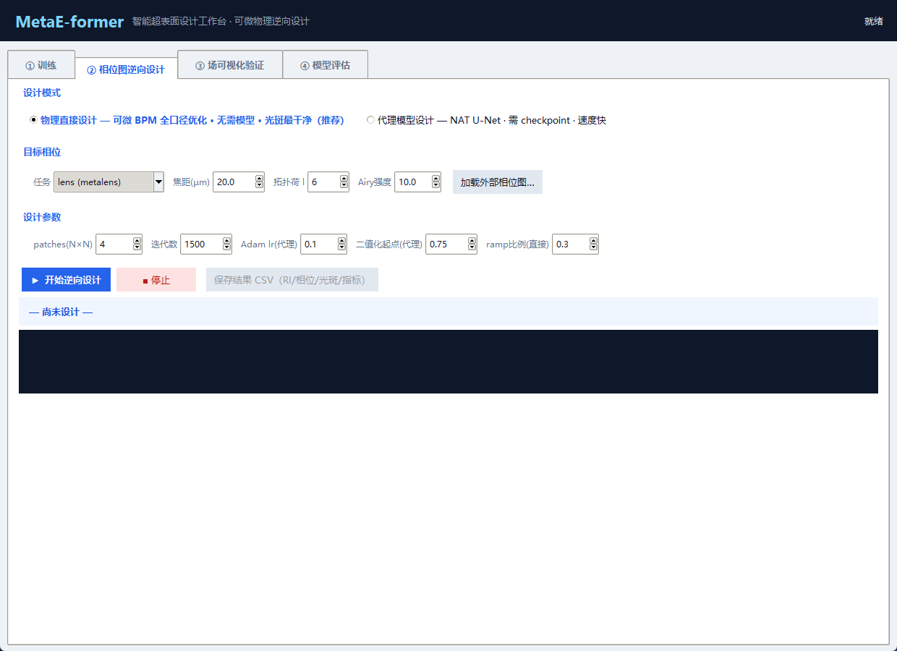
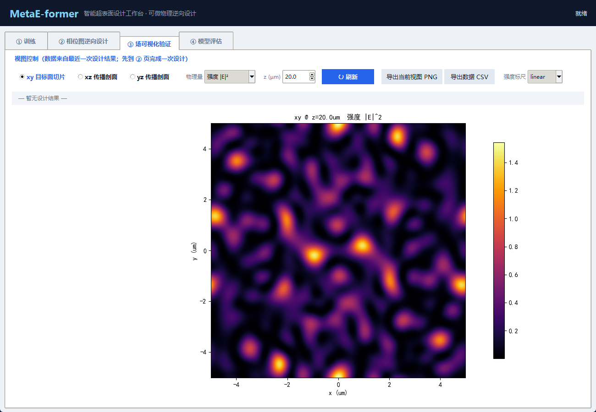
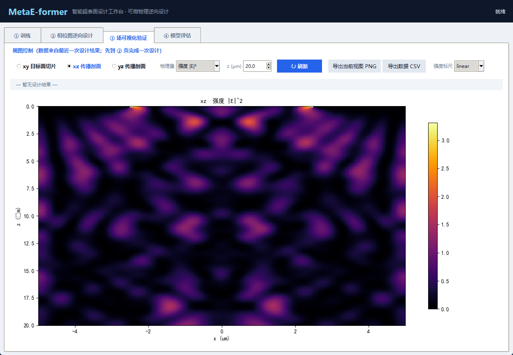
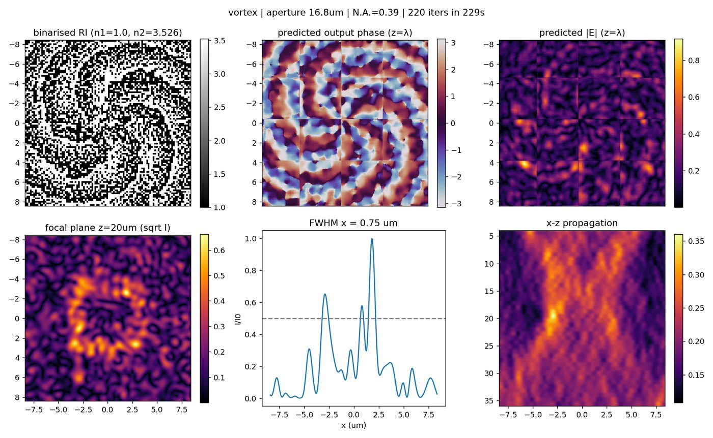
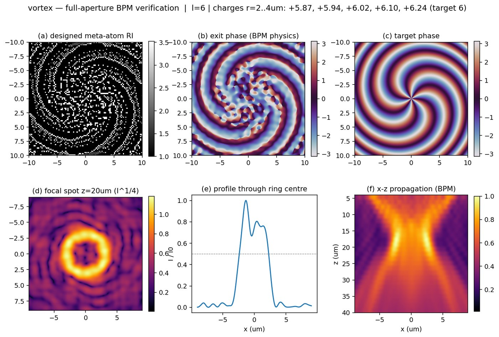

这是 MetaE-former 的完整复现：把论文里的物理链路、邻域注意力代理模型、5 µm patch 拼接逆向设计， 整理成源码、已训练权重、结果图、零基础教程四件套。 从装环境到出第一张光斑图，约 30 分钟；从零到读懂每一行代码，约两天。
如果你只记得一句话：用一块可编程的“相位画布”塑造光，再用神经网络把“想要的图案”反解成“该画什么”。 下面四小节把这个直觉拆开。
普通透镜靠曲面折射聚焦，厚度以毫米计。超表面（metasurface）换成一片几百纳米厚的结构阵列： 每个位置立一根截面尺寸不同的柱子，光穿过时局部相位被改变，整片柱子合起来就形成任意形状的波前。
本项目的最小单元是这样的：5 µm × 5 µm 的方块上，25 × 25 根方柱，柱距 200 nm，高度统一 800 nm， 材料折射率可在 1.0（空气）到 3.526（非晶硅）之间取任意等效值。相位累积近似 φ ≈ k₀·(n−1)·h， 所以调折射率 = 调相位，这张 25×25 的折射率图就是全部的自由变量。
正向问题（给结构、算光场）已经很难：严格的解是 Maxwell 方程，工业上用 FDTD / RCWA， 算一个 5 µm 小块要几秒到几分钟。而逆向设计需要对结构和相位反复试探——如果每一步都跑全波仿真， 一张 1 mm 口径的超表面要算几天。
神经网络的作用是把这个慢求解器“蒸馏”成一个快 1000 倍的替身：先让真求解器标注几十万组 (结构 → 光场) 数据，训练一个网络去模仿；训练好之后，把它塞进优化循环，梯度下降每一步只花毫秒。 这个替身就叫代理模型（surrogate model）。
代价是精度：代理永远有误差。因此设计完还要回到真求解器做一次独立验证——这也是本项目把 “代理设计”和“物理直设计”两条路线都实现出来的原因（见 04 · 方法）。
训练一个“正向网络”结构→光场，再串一个“逆向网络”光场→结构，用正向网络提供梯度。 简单直接，但两个网络的误差会叠加。
直接学习“结构分布”，从噪声采样出候选结构。能一次生成多个解， 但难以精确命中指定相位，且训练不稳定。
用注意力网络精确拟合物理，再把网络当作可微算子，对每个 patch 直接做梯度下降反演。 精度与灵活性兼得，代价是需要一个高质量代理。
论文的很多设计选择，本质是在解决下面五个问题。看懂它们，代码就不再神秘。
网络只吃 25×25 的输入，1 mm 口径要切成 57121 块。每块独立反演，再拼成整片。 块之间必须重叠，否则接缝处相位会跳变。
块的场网格是 100×100 px，但只取中心 84×84 px（4.2 µm）参与拼接，留出 16% 重叠区。 拼接时用后一块覆盖前一块，靠重叠保证连续。
真实加工只有“有材料/没材料”两种状态，但梯度下降偏爱连续值。于是在损失里加
(1−n²) 项，随迭代把折射率推向两端，β 从 0 升到 5。
只要整条计算链能求导，就能用梯度下降反解。项目里所有物理计算都用 PyTorch 写， 而不是 numpy——这是最容易被改坏的地方。
相位是周期量：359° 与 1° 只差 2°，直接相减却得到 358°。所以损失写成
(1−cos(Δθ))/2，天然对 2π 周期。
小模型在二值结构上的相位误差可达 0.9–1.6 rad，足以让光斑散掉。 判断“是模型不够大还是物理设定错”，要靠物理直设计做对照。
论文要解决的核心矛盾是“大尺寸”与“自由形状”不可兼得：全波仿真精度高但算不动大孔径， 查表法速度快但只能做规则结构。它的答案是——训练一个足够准的代理，然后用代理去反演任意形状。
Kuang et al. · PhotoniX (2026) · 关键词：freeform metaoptics / neighborhood attention / transformer surrogate / inverse design
① 为什么是“邻域”注意力。标准自注意力让每个像素看全图，代价 O(N²)，100×100 就要一亿次交互。 但光在柱子之间的耦合本来就是短程的——真正互相影响的只有邻近几根。于是把注意力窗口限制在 5×5， 代价降到 O(N·k²)。这不是为了省算力而做的妥协，而是把物理先验写进了网络结构。
② 为什么是 U 形结构。输入 25×25、输出 100×100，尺寸差 4 倍。编码器逐级下采样提取全局信息 （25→13→7），解码器逐级上采样恢复分辨率（7→13→25→50→100），并用跳跃连接把浅层的细节接回来。 否则网络只会输出模糊的平均场。
③ 为什么需要两阶段训练。第一阶段在通用结构上预训练，学会“结构→光场”这个物理映射； 第二阶段用自监督数据引擎：先用预训练模型去设计目标任务，把优化过程中每一代的中间结构都存下来， 再用真求解器重新标注，最后用差分学习率微调。这样模型见到的就不再是随机噪声，而是“设计过程中真正会出现的结构”。
预训练用四类自由形状超原子（随机斑块 72%、岛状 12%、条纹 16%、任务型）共 26 万样本，
损失是幅度 L1 与周期相位项的组合：L = L_amp + α·L_phase。
微调的关键在“数据从哪来”。论文的做法是自己造：拿预训练模型去反演目标任务， 把优化过程中每一代的折射率快照全部存档（而不只是最终结果），再用真求解器标注。 为什么用中间快照？因为最终结构分布太窄，中间态才覆盖了设计时的真实分布。
微调时还用了差分学习率：上采样层 0.5a、浅层 5a、中层 8a、深层 10a、下采样层 15a。 直觉是——浅层学的是通用局部特征，不该大改；下采样层要适应新任务的输入分布，可以大改。
| 论文要素 | 论文做法 | 本复现 |
|---|---|---|
| 真值求解器 | RCWA / FDTD 全波 | split-step BPM 近似 |
| 训练数据 | 26 万样本，20 epoch | 流式生成，1600 step ≈ 3.8 万 |
| 网络规模 | 16 块 · embed 256 · 16 heads（≈40 M） | 7 块 · embed 48 · 4 heads（0.82 M） |
| 设计口径 | 1 mm · 57121 patches | 4×4 patches（16.8 µm） |
| 运行硬件 | GPU 集群 | 纯 CPU |
先说结论：方法链路全部跑通，数值精度没有追平论文。下面把两者放在一起，差异逐条标出来。 点击任意图片可放大。


差异的根因（诚实归因）：① 代理模型只有 0.82 M 参数（论文约 40 M），二值结构上的相位误差实测 0.9–1.6 rad， 接近 π/2，足以让焦斑散掉；② 真值用 BPM 近似而非 FDTD，忽略了反射与多重散射；③ 4×4 小块拼接会累积边界误差。 三者叠加，导致实场质量明显低于论文。
这不是 bug。判断依据见下方指标表：验证集指标落在论文区间内，说明网络学到的物理映射是对的； 差距出现在“高精度二值结构”这一最难环节，属于容量与求解器精度问题。
evaluate.py --ckpt checkpoints/pretrain.pt --n 48 的实测输出，三类自由形状各 48 个样本：
| 样本族 | n | 幅度 MAE | 相位 MAE | 论文 FDTD 区间 |
|---|---|---|---|---|
| random（随机斑块） | 48 | 0.123 | 0.171 | 0.037 – 0.114 |
| island（岛状） | 48 | 0.096 | 0.077 | 0.037 – 0.114 |
| stripe（条纹） | 48 | 0.134 | 0.087 | 0.037 – 0.114 |
| overall | 144 | 0.118 | 0.112 | 0.067 – 0.123（相位） |
幅度误差略高于论文上限，相位误差落在区间内。随机族最差（0.171），因为它的高频成分最多、最难被 0.82 M 的网络拟合。



为了让不懂代码也能用，项目附带一个 PyQt5 图形界面（打包为免安装 exe）。 四个标签页覆盖全部链路：训练、相位图逆向设计、场可视化验证、模型评估。





本机没有 GPU 集群，也没有 Lumerical。复现的策略是保留全部方法结构，只替换无法获得的部分， 并把每一处替换的代价标出来。
把 800 nm 高的柱子沿 z 切成 8 片，每片交替做「相位累积 exp(i·k₀(n−1)dz)」与
「角谱衍射传播」。它保留了强相位累积和柱子间的多切片衍射耦合——也就是让逆向设计变难的那两个因素——
但忽略了反射与 z 向多重散射。关键是整条链路可微，所以能直接求梯度。
采样器每次现场随机生成一批结构（随机斑块 72% / 岛状 12% / 条纹 16%，其中 60% 连续、40% 二值）， 立刻用 BPM 打标签，用完即弃。省掉了下载与存储，也保证数据分布可以随时调参。
目标相位按 84% 切割比切成 patch，全部 16 块拼成一个 batch 同时优化（论文 Fig.5 的做法）。
每块用 Adam 优化 tanh 参数化的折射率，损失为周期相位项 + β 二值惩罚。
最后把结构按 25 px 平铺、场按 100 px 重叠贴回。
项目实现了两条独立的逆向设计路径。它们不是替代关系，而是互检关系。
| 代理模型设计 | 物理直接设计 | |
|---|---|---|
| 优化循环里算光场的东西 | 神经网络（快，有误差 ≈1 rad） | 真 BPM（准，慢） |
| 口径处理 | 5 µm patch 反演后拼接 | 全口径一次反演 |
| 典型耗时 | 2 – 5 分钟 | 数十分钟 |
| 拼接误差 | 有 | 无 |
| 论文对应 | 论文正统方法（Fig.5 / Fig.6） | 论文无对应章节，用于替代 FDTD 验证 |
| 什么时候用 | 日常设计、快速迭代 | 验收、判断“是模型不够还是物理设定错” |
怎么用这条互检：对同一目标分别跑两条路线。如果直设计光斑干净、代理设计散乱， 问题在代理（该加大模型）；如果两者都散，问题在目标相位或传播参数（该改物理设定）。 这个归因能力，比任何单条路线的结果都更有价值。
GUI 里这两条路线就是「相位图逆向设计」页顶部的两个单选项，切换后参数面板会自动适配。
代码包已含三个预训练权重（约 10 MB），不需要重新训练就能直接设计。 全新环境只需装 torch / numpy / scipy / matplotlib。
# 1. 取代码并进入目录 git clone https://github.com/Alice-P197/metae-former.git cd metae-former # 2. 装依赖（CPU 版 torch，无需 CUDA） pip install -r requirements.txt # 3. 确认权重可用：三族样本的代理精度（约 26 秒） python evaluate.py --ckpt checkpoints/pretrain.pt --n 48 # 4. 做一次涡旋光逆向设计，产物落在 outputs/vortex6/ python design.py --task vortex --l 6 --ckpt checkpoints/finetune2.pt --out outputs/vortex6
# 金属透镜：焦距 20 µm，环境折射率 1.0 python design.py --task metalens --focal 20e-6 --n-bg 1.0 --out outputs/metalens # 高阶涡旋：拓扑荷 l=6 python design.py --task vortex --l 6 --out outputs/vortex6 # 艾里光束：立方相位强度 S 越大，主瓣越窄 python design.py --task airy --strength 10.0 --out outputs/airy # 任意目标：传入自己的相位图（尺寸 = (patches-1)*84+100） python design.py --task custom --phase my_phase.npy --out outputs/custom # 物理直接设计（不经代理，慢但准） python direct_design.py outputs/direct_vortex6 vortex 6 --iters 2500
六联图：折射率分布、输出相位、输出振幅、焦面光斑、FWHM 剖面、x-z 传播。
全部原始数组：ri / field / focal_int / xz / meta，可直接二次分析。
NA、FWHM（x/y）、衍射极限、3×FWHM 效率、优化耗时、单 patch 迭代耗时。
附带的 TUTORIAL.md 是写给“完全没接触过深度学习”的读者的，约 970 行，含张量、训练循环、代理模型、可微性等全部前置概念。 推荐按下面的顺序读，每一步都能立刻看到输出：
| 顺序 | 文件 | 读它解决什么问题 |
|---|---|---|
| 1 | metae/tasks.py | 目标相位长什么样——先画出来看，再谈设计 |
| 2 | metae/solver.py | 物理怎么算的，输入输出各是什么形状 |
| 3 | metae/data.py | 训练数据从哪来，四类结构怎么采样 |
| 4 | metae/model.py | 网络怎么搭的，邻域注意力实现细节 |
| 5 | pretrain.py | 把上面四块拼成训练循环（20 行的骨架） |
| 6 | design.py | 把训练好的模型当工具用，论文 Eq.4–7 的落地 |
压缩包内含全部源码、三个预训练权重、关键结果图与教程文档。解压后按教程第 0 章即可跑通， 无需重新训练。
metae/ 库 + 7 个入口脚本pretrain.pt / finetune.pt / finetune2.ptTUTORIAL.md（约 970 行）Kuang et al., Rapid inverse design of large-scale freeform metaoptics with the neighborhood-attention transformer, PhotoniX (2026).
代码可自由修改与再分发。论文图片版权归原作者与期刊所有，本页仅作复现对照之用。
如果你在研究中用到了本复现的代码或权重：
@article{kuang2026metae,
title = {Rapid inverse design of large-scale freeform metaoptics
with the neighborhood-attention transformer},
author = {Kuang, and others},
journal = {PhotoniX},
year = {2026}
}
复现声明。本页是第三方复现，非论文作者官方代码。真值场由 split-step BPM 生成而非 RCWA/FDTD， 网络规模为论文的约 1/49，设计口径为 4×4 patches 而非 1 mm。 因此绝对数值不可与论文对标，只保证方法链路（数据生成 → 预训练 → 自监督微调 → patch 拼接反演 → 验证）完整可运行。
结果差距已如实展示。Fig.6 的实场行明显退化，原因在第 03 节逐条列出，未做美化或裁剪。
如果你需要论文级精度，路线是换 --preset paper 并用真实 FDTD 重新标注数据。
图片版权。「论文原图」标注的图片版权归原作者与 PhotoniX 所有，此处仅用于复现结果的学术对照， 不作商业使用。
代码许可。MIT。欢迎提 issue 或 PR，尤其是关于提高二值结构预测精度的思路。